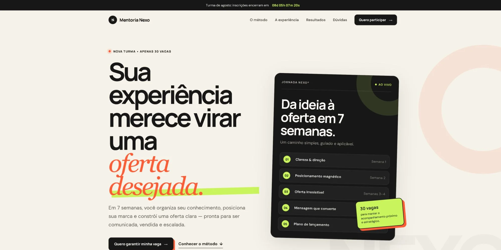

01
Mentoria e lançamento
Uma oferta complexa apresentada com clareza.
Uma direção editorial forte para organizar método, posicionamento e chamada para a nova turma sem sobrecarregar a decisão.
- Objetivo
- Transformar experiência em uma oferta desejada
- Entrega
- Estratégia visual e landing page responsiva
mentoria-nexo.com.br
